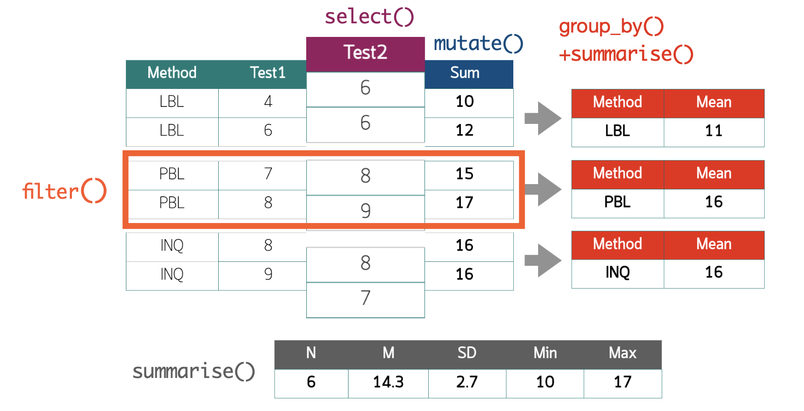

Week4 : Manipulating Data
Department of Educational Research and Psychology
Faculty of Education Chulalongkorn University
2025-08-03
library-here
ใช้สำหรับระบุ relative path ได้อย่างถูกต้องและปลอดภัย
อ้างอิงจาก root directory ของโปรเจคโดยอัตโนมัติจาก .Rproj หรือ Git repo
ทำให้การอ้างอิงข้อมูลหรือไฟล์ใน project ที่กำลังทำไม่ได้ขึ้นกับ location ของ file ที่กำลังทำงานอยู่
ยกตัวอย่างเช่น
ThesisProject/
├── ThesisProject.Rproj 👈 1. root ที่ here() จะอ้างจาก
├── data/
│ └── my_data.csv 👈 3. data ที่ต้องการเรียก
├── scripts/
│ └── analysis/
│ └── deep_folder/
│ └── script.R 👈 2. สมมุติว่ากำลังเขียน script นี้อยู่การเขียนอ้างอิงไฟล์ my_data.csv จาก script.R จะเป็นดังนี้
Manipulating Data
Selecting Variables
Filtering Cases
Transforming Variables
Summarise Variables

mytidy2.csv
# A tibble: 20 × 16
student_id name infect stress.1 stress.2 stress.3 stress.4 stress.5
<dbl> <chr> <dbl> <dbl> <dbl> <dbl> <dbl> <dbl>
1 20 Adam Warlock 2 3 2 3 2 2
2 973 Ancient One 2 3 2 3 3 1
3 520 Captain Ameri… 2 3 2 3 2 1
4 47 Captain Marvel 2 2 1 1 1 1
5 867 Colossus 1 3 2 3 4 2
6 335 Deadpool 2 1 1 1 1 1
7 308 Diablo 1 2 1 2 1 1
8 218 Doctor Doom 1 3 2 3 2 1
9 439 Dr. Strange 2 1 1 1 1 1
10 869 Exodus 1 2 2 3 2 1
11 462 Falcon 2 3 2 3 2 3
12 921 Groot 2 1 1 1 1 1
13 221 Hitman 2 4 2 4 4 3
14 855 Hulk 2 5 5 5 5 5
15 29 Iceman 2 3 2 4 2 1
16 75 Iron Man 2 3 2 3 2 1
17 799 Jimmy Woo 2 1 1 1 1 1
18 82 Kingpin 2 2 1 1 1 1
19 570 Kronos 2 4 2 4 4 3
20 562 Logan 2 4 2 3 3 2
# ℹ 8 more variables: stu.engage.1 <dbl>, stu.engage.2 <dbl>,
# stu.engage.3 <dbl>, stu.engage.4 <dbl>, stu.itcap <dbl>, internet <dbl>,
# it.equip <dbl>, gpax.y2 <dbl>Selecting variables
คือการคัดเลือกตัวแปรที่ต้องการ ปกติใน R สามารถทำได้หลายวิธีการ ได้แก่ (1) การอ้างอิงด้วย matrix indexing (2) การอ้างอิงด้วย $ แล้วตามด้วยชื่อคอลัมน์ หรือ (3) การใช้ฟังก์ชัน select() ของ dplyr package
พิจารณาตัวอย่างต่อไปนี้
Helper functions for Selecting variables
everything()last_col()starts_with("prefix")ends_with("suffix")contains("string")matches("regex")
Mutating variables
เป็น grammar สำหรับสร้างตัวแปรใหม่จากตัวแปรที่มีอยู่แล้ว โดยใช้ฟังก์ชัน
mutate()ของdplyrpackage เทียบเท่ากับการแปลงค่าของตัวแปรรวมคะแนน
stressทั้ง 5 ครั้งเป็นตัวแปรใหม่stress_total
mytidy2 %>%
mutate(stress_total = stress.1 + stress.2 + stress.3 +
stress.4 + stress.5) |>
select(name, starts_with("stress")) |>
head(10)# A tibble: 10 × 7
name stress.1 stress.2 stress.3 stress.4 stress.5 stress_total
<chr> <dbl> <dbl> <dbl> <dbl> <dbl> <dbl>
1 Adam Warlock 3 2 3 2 2 12
2 Ancient One 3 2 3 3 1 12
3 Captain America 3 2 3 2 1 11
4 Captain Marvel 2 1 1 1 1 6
5 Colossus 3 2 3 4 2 14
6 Deadpool 1 1 1 1 1 5
7 Diablo 2 1 2 1 1 7
8 Doctor Doom 3 2 3 2 1 11
9 Dr. Strange 1 1 1 1 1 5
10 Exodus 2 2 3 2 1 10Mutating variables
การแปลงค่าตัวแปรต่อเนื่องเป็นตัวแปรจัดประเภท สามารถทำได้หลายวิธีการ เช่น การใช้ฟังก์ชัน ifelse() หรือ case_when() ของ dplyr package
mytidy2 |>
mutate(result = ifelse(gpax.y2 >= 1.5, "pass", "fail")) |>
select(name, gpax.y2, result) |>
head(6)# A tibble: 6 × 3
name gpax.y2 result
<chr> <dbl> <chr>
1 Adam Warlock 2.76 pass
2 Ancient One 2.84 pass
3 Captain America 2.48 pass
4 Captain Marvel 3.46 pass
5 Colossus 1.81 pass
6 Deadpool 2.15 pass mytidy2 |>
mutate(result = case_when(
gpax.y2 >= 1.5 ~ "pass",
TRUE ~ "fail"
)) |>
select(name, gpax.y2, result) |>
head(6)# A tibble: 6 × 3
name gpax.y2 result
<chr> <dbl> <chr>
1 Adam Warlock 2.76 pass
2 Ancient One 2.84 pass
3 Captain America 2.48 pass
4 Captain Marvel 3.46 pass
5 Colossus 1.81 pass
6 Deadpool 2.15 pass กิจกรรมคำนวณ engagement score
คำนวณคะแนน engagement ของนักเรียนรายบุคคล โดยใช้ค่าเฉลี่ยของ
stu.engage.XXXสร้าง visualization เพื่อบรรยายแนวโน้ม engagement ของนักเรียน
คำนวณค่าสถิติบรรยายเพื่อบรรยายแนวโน้ม engagement ของนักเรียน
ผลลัพธ์ที่ได้เป็นอย่างไร?
กิจกรรมต่อมา
ชุดข้อมูล mytidy2 มีตัวแปรจัดประเภทจำนวน 3 ตัวได้แก่
infect: ตัวแปรจัดประเภทที่บอกว่ามีการติดเชื้อหรือไม่ (1 = yes, 2 = no)stu.itcap: ตัวแปรจัดประเภทที่บอกว่ามีความสามารถในการใช้เทคโนโลยีหรือไม่ (1 = low, 2 = medium, 3 = high)internet: สัญญาณ internet ที่บ้าน (1 = noproblem, 2 = problem)
ขอให้เปลี่ยนสถานะของตัวแปรทั้ง 3 ให้เป็น factor ทั้งหมด
across()
across() เป็นฟังก์ชันที่ใช้ภายใน mutate(), summarise(), หรือ filter()
เพื่อ จัดการหลายคอลัมน์ในคราวเดียว ได้อย่างง่ายและยืดหยุ่น
ลดการเขียน code ซ้ำ ๆ
ใช้สั่งงาน/ประมวลผลหลายคอลัมน์พร้อมกันด้วยฟังก์ชันเดียวกัน หรือเงื่อนไขเดียวกัน
.colsใช้กำหนดคอลัมน์ที่ต้องการ สามารถใช้ได้หลายวิธีการ เช่นeverything(),starts_with(), … ,where(is.numeric)หรือc("col1", "col2").fnsใช้กำหนดฟังก์ชันที่ต้องการใช้กับคอลัมน์ที่เลือก เช่นmean,sum,as.factor,as.character, … หรือสามารถใช้list()เพื่อระบุหลายฟังก์ชันได้ฟังก์ชันเดียว สามารถระบุชื่อฟังก์ชันได้เลย เช่น
mean,log,scaleฟังก์ชันที่มีการระบุ argument สามารถใช้
~เพื่อระบุฟังก์ชัน เช่น~ log(.x + 1),~ scale(.x, center = TRUE, scale = TRUE)ฟังก์ชันหลายตัว สามารถใช้
list()เพื่อระบุหลายฟังก์ชัน เช่นlist(mean, sd),list(~ log(.x + 1), ~ scale(.x))
Filtering cases
การคัดกรองหน่วยข้อมูล เป็นการเลือกหน่วยข้อมูลตามเงื่อนไขที่กําหนดจากชุดข้อมูล การคัดกรองหน่วยข้อมูลใน R สามารถทําได้หลายวิธีการ
การคัดกรองหน่วยข้อมูลมักต้องใช้ logical operator เป็นตัวช่วยในการคัดกรอง
Filtering cases
# A tibble: 16 × 16
student_id name infect stress.1 stress.2 stress.3 stress.4 stress.5
<dbl> <chr> <dbl> <dbl> <dbl> <dbl> <dbl> <dbl>
1 20 Adam Warlock 2 3 2 3 2 2
2 973 Ancient One 2 3 2 3 3 1
3 520 Captain Ameri… 2 3 2 3 2 1
4 47 Captain Marvel 2 2 1 1 1 1
5 335 Deadpool 2 1 1 1 1 1
6 439 Dr. Strange 2 1 1 1 1 1
7 462 Falcon 2 3 2 3 2 3
8 921 Groot 2 1 1 1 1 1
9 221 Hitman 2 4 2 4 4 3
10 855 Hulk 2 5 5 5 5 5
11 29 Iceman 2 3 2 4 2 1
12 75 Iron Man 2 3 2 3 2 1
13 799 Jimmy Woo 2 1 1 1 1 1
14 82 Kingpin 2 2 1 1 1 1
15 570 Kronos 2 4 2 4 4 3
16 562 Logan 2 4 2 3 3 2
# ℹ 8 more variables: stu.engage.1 <dbl>, stu.engage.2 <dbl>,
# stu.engage.3 <dbl>, stu.engage.4 <dbl>, stu.itcap <dbl>, internet <dbl>,
# it.equip <dbl>, gpax.y2 <dbl>Filtering cases
# A tibble: 4 × 16
student_id name infect stress.1 stress.2 stress.3 stress.4 stress.5
<dbl> <chr> <dbl> <dbl> <dbl> <dbl> <dbl> <dbl>
1 47 Captain Marvel 2 2 1 1 1 1
2 439 Dr. Strange 2 1 1 1 1 1
3 29 Iceman 2 3 2 4 2 1
4 562 Logan 2 4 2 3 3 2
# ℹ 8 more variables: stu.engage.1 <dbl>, stu.engage.2 <dbl>,
# stu.engage.3 <dbl>, stu.engage.4 <dbl>, stu.itcap <dbl>, internet <dbl>,
# it.equip <dbl>, gpax.y2 <dbl>Filtering cases
# A tibble: 17 × 16
student_id name infect stress.1 stress.2 stress.3 stress.4 stress.5
<dbl> <chr> <dbl> <dbl> <dbl> <dbl> <dbl> <dbl>
1 20 Adam Warlock 2 3 2 3 2 2
2 973 Ancient One 2 3 2 3 3 1
3 520 Captain Ameri… 2 3 2 3 2 1
4 47 Captain Marvel 2 2 1 1 1 1
5 335 Deadpool 2 1 1 1 1 1
6 439 Dr. Strange 2 1 1 1 1 1
7 869 Exodus 1 2 2 3 2 1
8 462 Falcon 2 3 2 3 2 3
9 921 Groot 2 1 1 1 1 1
10 221 Hitman 2 4 2 4 4 3
11 855 Hulk 2 5 5 5 5 5
12 29 Iceman 2 3 2 4 2 1
13 75 Iron Man 2 3 2 3 2 1
14 799 Jimmy Woo 2 1 1 1 1 1
15 82 Kingpin 2 2 1 1 1 1
16 570 Kronos 2 4 2 4 4 3
17 562 Logan 2 4 2 3 3 2
# ℹ 8 more variables: stu.engage.1 <dbl>, stu.engage.2 <dbl>,
# stu.engage.3 <dbl>, stu.engage.4 <dbl>, stu.itcap <dbl>, internet <dbl>,
# it.equip <dbl>, gpax.y2 <dbl>กิจกรรม
นักเรียนที่มีเกรดเฉลี่ยสะสมน้อยกว่า 1.5 หรือมากกว่า 3.0 มีจำนวนกี่คน
นักเรียนที่เก่งการใช้เทคโนโลยี (กลุ่มคล่องแคล่วมาก) และมีความเครียดในการเรียนน้อยกว่า 3 คะแนน มีจำนวนกี่คน และในจำนวนนี้มีเกรดเฉลี่ยสะสมเป็นเท่าไหร่
arrange()
ฟังก์ชัน
arrange()ใช้สำหรับจัดเรียงข้อมูลตามตัวแปรที่ต้องการจัดเรียงจากมากไปน้อย หรือน้อยไปมากก็ได้
นักเรียนที่มีเกรดเฉลี่ยสะสมน้อยกว่า 1.5 หรือมากกว่าเท่ากับ 3.0 และเคยติดเชื้อ Covid-19 คนที่มีคะแนนความเครียด (stress) สูงและต่ําที่สุดคือใคร
summarise()
ฟังก์ชันสำหรับสร้างสถิติบรรยาย (descriptive statistics) เช่น ค่าเฉลี่ย, ส่วนเบี่ยงเบนมาตรฐาน, ค่าต่ำสุด, ค่าสูงสุด, … จากชุดข้อมูลต้นฉบับ
Central tendency:
mean(),median()Dispersion:
sd(),var(),range()Range:
min(),max(),quantile()Count:
n(),n_distinct()
summarise()
สร้างตารางสถิติพื้นฐานของความเครียดและ gpax ของกลุ่มนักเรียนที่ไม่เคยติดเชื้อ covid-19
mytidy2 |>
filter(infect == 2) |>
summarise(
mean_stress = mean(stress.1, na.rm = TRUE),
sd_stress = sd(stress.1, na.rm = TRUE),
min_stress = min(stress.1, na.rm = TRUE),
max_stress = max(stress.1, na.rm = TRUE),
mean_gpax = mean(gpax.y2, na.rm = TRUE),
sd_gpax = sd(gpax.y2, na.rm = TRUE)
)# A tibble: 1 × 6
mean_stress sd_stress min_stress max_stress mean_gpax sd_gpax
<dbl> <dbl> <dbl> <dbl> <dbl> <dbl>
1 2.69 1.25 1 5 2.57 0.695group_by()
ฟังก์ชัน
group_by()ใช้สำหรับจัดกลุ่มข้อมูลตามตัวแปรที่ต้องการใช้ร่วมกับ
summarise()เพื่อสร้างสถิติบรรยายของแต่ละกลุ่มใช้ร่วมกับ
mutate()เพื่อสร้างตัวแปรใหม่ที่เป็นผลลัพธ์ของการคำนวณในแต่ละกลุ่ม
# A tibble: 2 × 4
infect mean_stress sd_stress n
<dbl> <dbl> <dbl> <int>
1 1 2.5 0.577 4
2 2 2.69 1.25 16
Assistant Prof. Dr. Siwachoat Srisuttiyakorn
Department of Educational Research and Psychology
Faculty of Education Chulalongkorn University